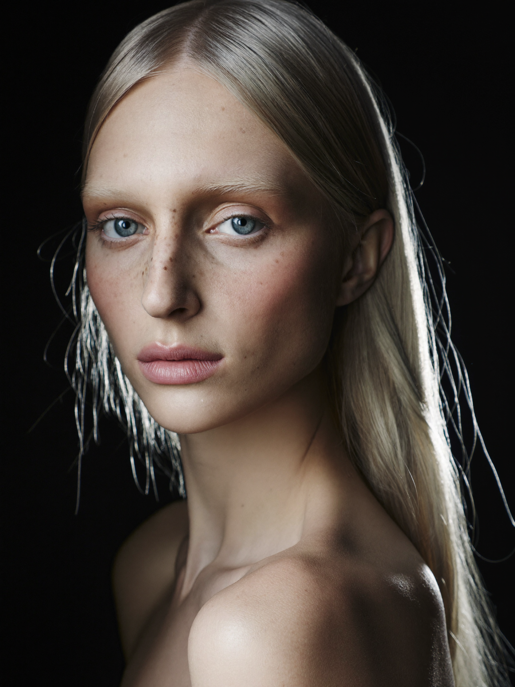
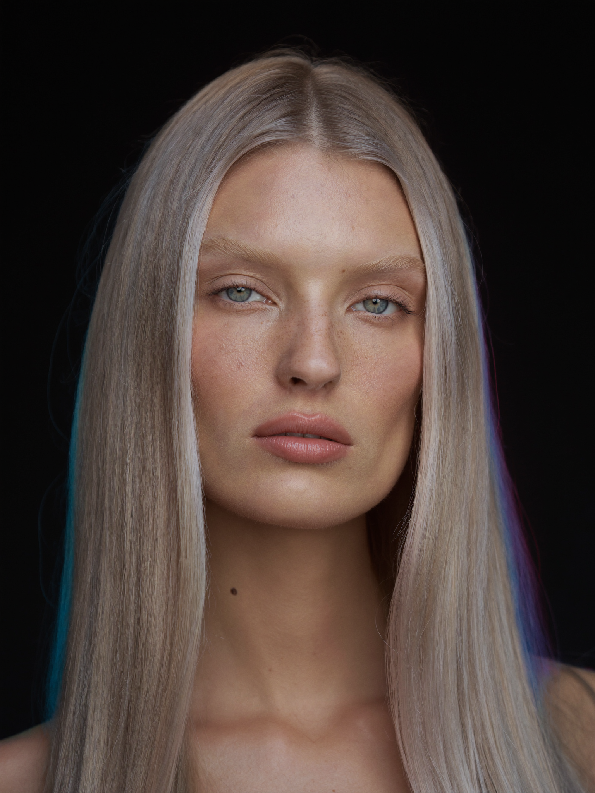
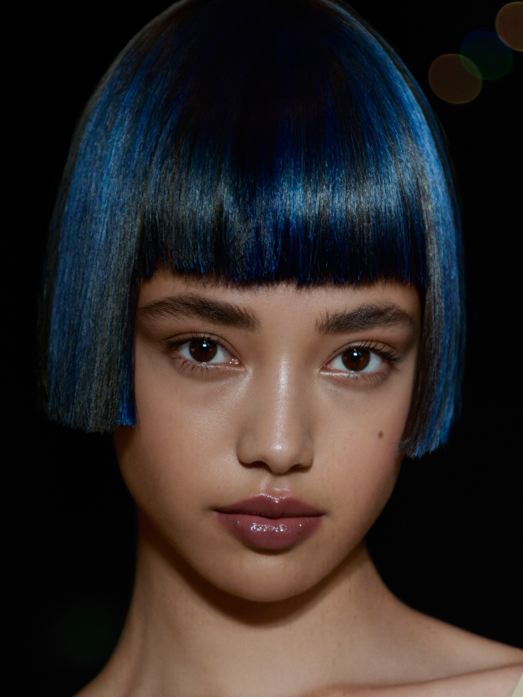
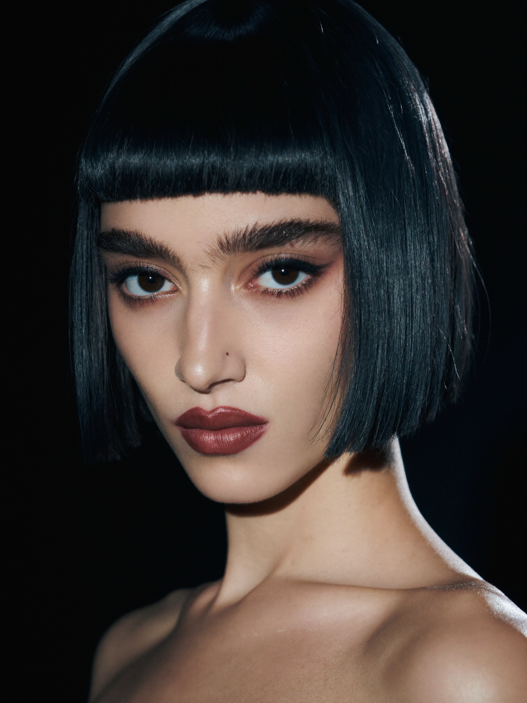
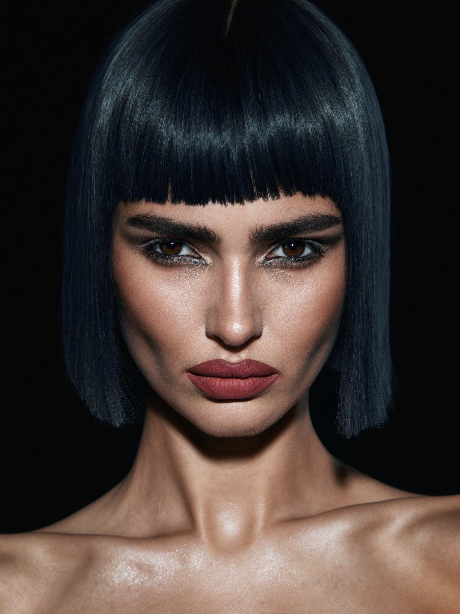
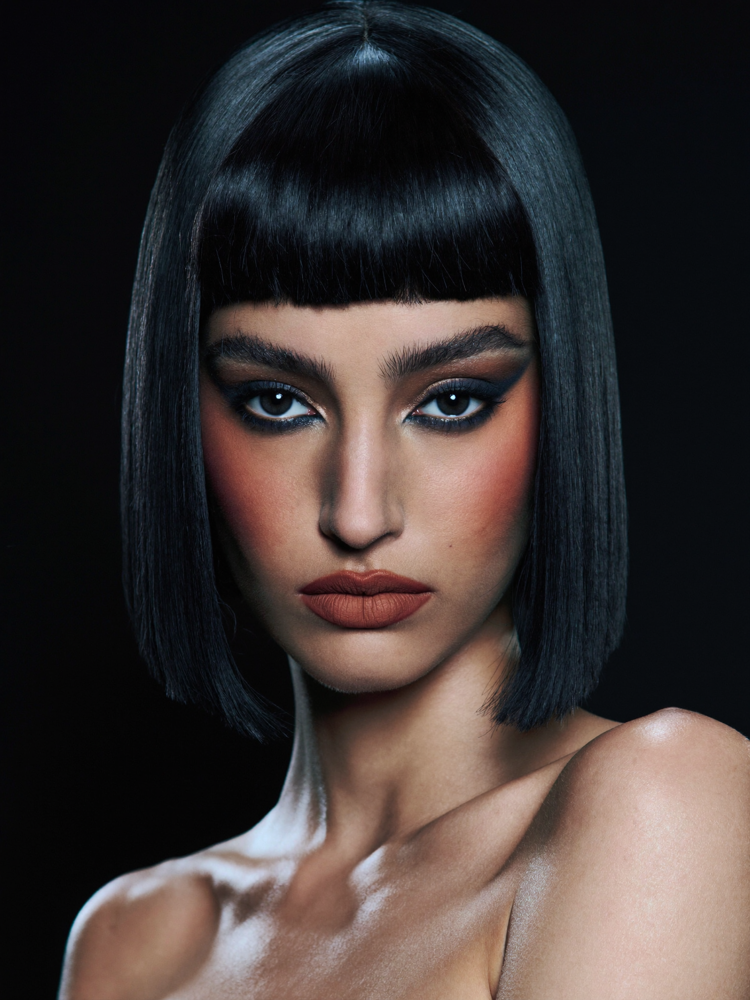
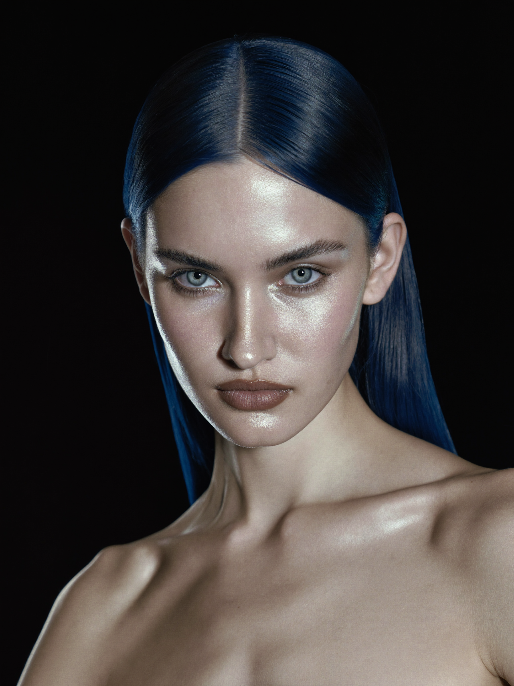
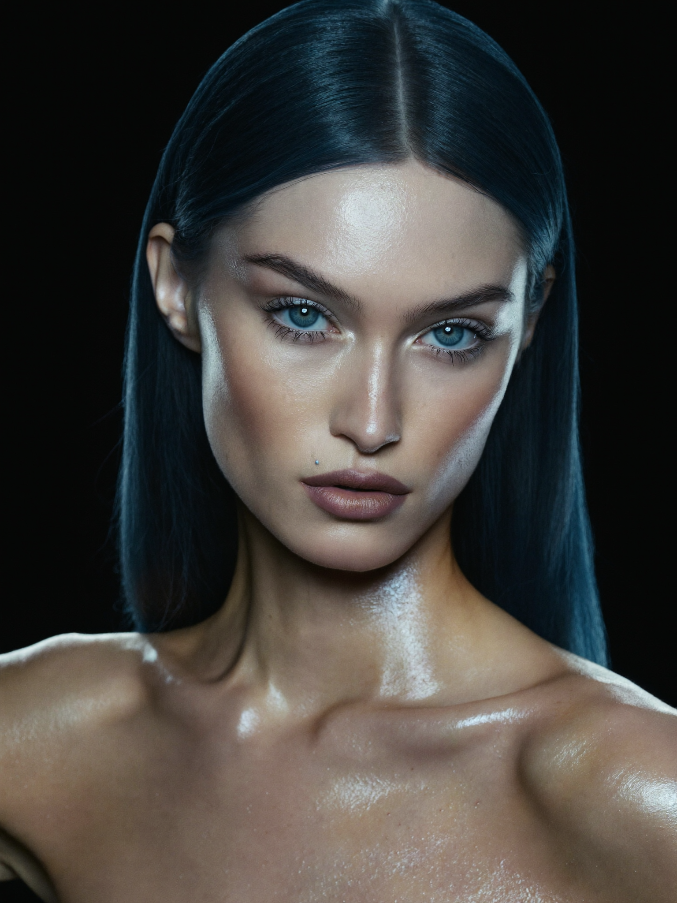
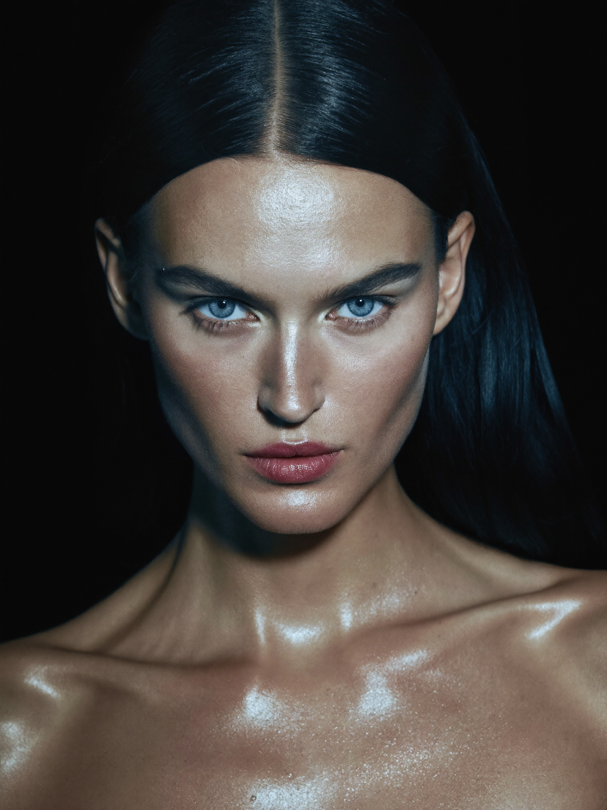

Front A
Four campaign faces generated from the casting spec. Each row: two front options (the brass-framed one is the recommended keeper), a 3/4 + profile consistency test, and a short slow motion clip. This is a look-development pass — not final talent.
Glacial classic heiress. 25, Northern European. Pale glacier grey-blue almond eyes · freckles on nose bridge · tiny mark below left eye · cool ash-platinum centre-parted hair.




Sharp Parisienne. 24, French. Espresso cat eyes · strong straight dark brows · berry-nude lip · mark above right lip · jet blue-black blunt bob with baby fringe.




Warm romantic. 26, English/Irish. Round warm hazel-green eyes · dense sun-kissed freckles · soft dimple · honey-bronde textured wavy bob · warm pearl backdrop.


Intense muse — main campaign face. 23, Czech. Icy steel-green wide-set eyes · ultra-high cheekbones · aquiline nose · mark high on cheekbone · raven blue-black long sleek hair · mother-of-pearl makeup sheen.


